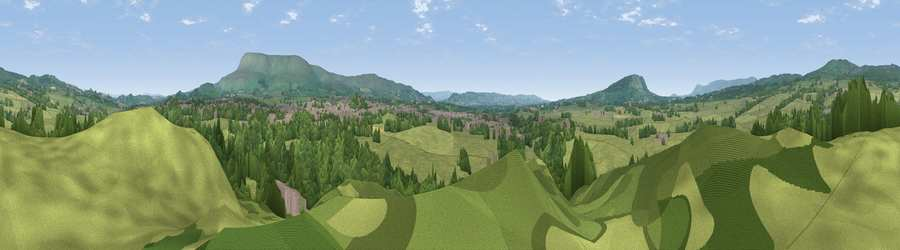

Viewpoint near Waddington
#27303 in England · top 72% of its area beats it · near WaddingtonWhere it is
The exact computed spot (SD 73375 42825). Click the marker for map links.
The view, rendered

A 360° render of this exact spot computed from the terrain model, tree cover and land cover — summer colours, afternoon light, calibrated against photographs of famous viewpoints. Real trees, hedges and buildings will differ in detail.
The panorama
Grey silhouette: terrain skyline in each direction (720 bearings, Earth curvature and refraction included). Dashed green: skyline with trees (+15 m) and buildings (+8 m) as obstacles. Blue strip: how far the ground is visible on each bearing.
Where the view opens
Wedge length = distance to the farthest visible ground on that bearing (vegetation-aware). Rings at 10, 25 and 50 km.
What fills the view
69% grassland · 24% woodland · 6% built-up ·
Angular shares of the visible panorama (visual magnitude), not map area. Landscape diversity 0.35 (0–1 Shannon).
Key numbers
More beautiful places nearby
The staircase of upgrades: each row has a higher view potential than everything closer. Driving times are estimates from straight-line distance, calibrated against real road routing — check an actual route before setting out.
| Place | Direction | Drive | Score |
|---|---|---|---|
| Viewpoint near Clitheroe | SE · 1 km | ~4 min | 46.8 |
| Viewpoint near Newton | NNW · 5 km | ~11 min | 67.7 |
| Viewpoint near Newton | NNW · 5 km | ~11 min | 70.2 |
| Viewpoint near Pendleton | ESE · 5 km | ~12 min | 72.1 |
| Viewpoint near Downham | E · 6 km | ~13 min | 75.3 |
| Pendle Hill | ESE · 7 km | ~15 min | 76.5 |
| Parlick | W · 14 km | ~25 min | 77.5 |
| Darwen Hill | SSW · 22 km | ~36 min | 80.7 |
53.88093, -2.40650 · source: screening · position refined by local search. Computed location — check access rights before visiting.